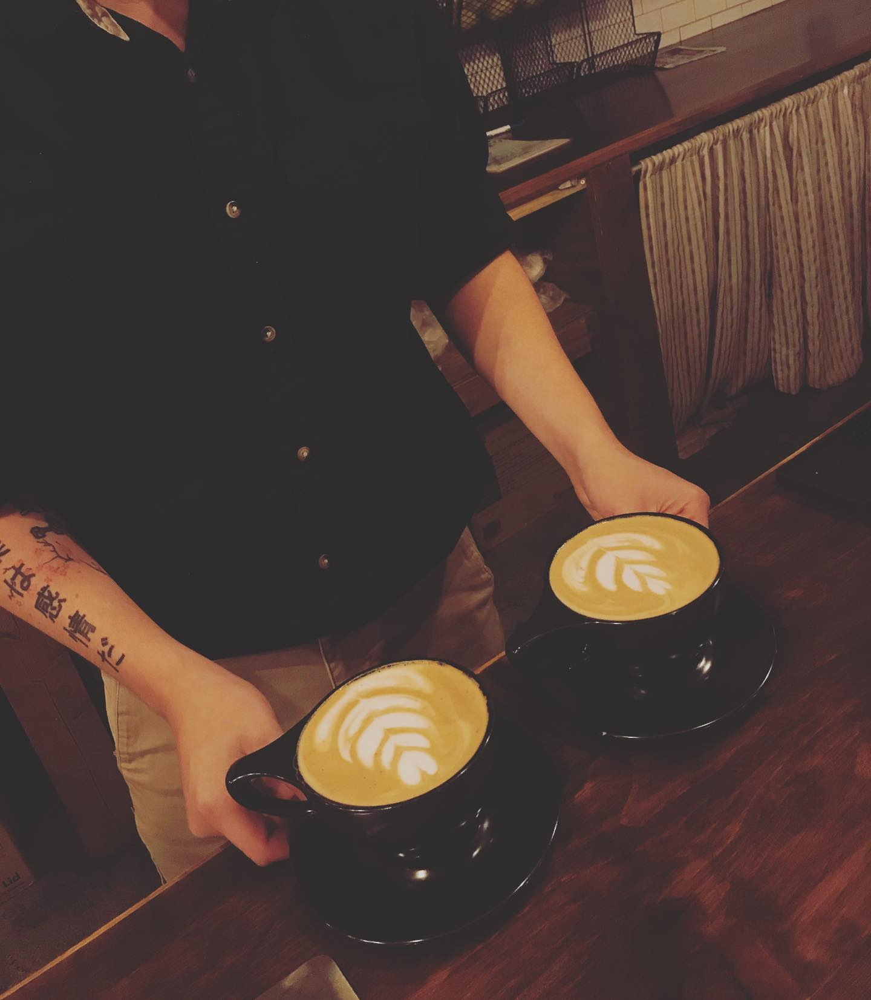
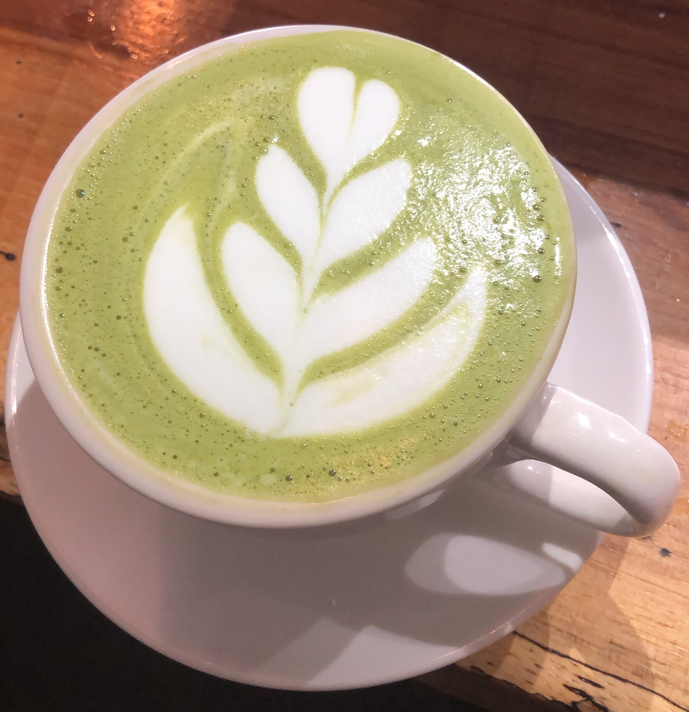
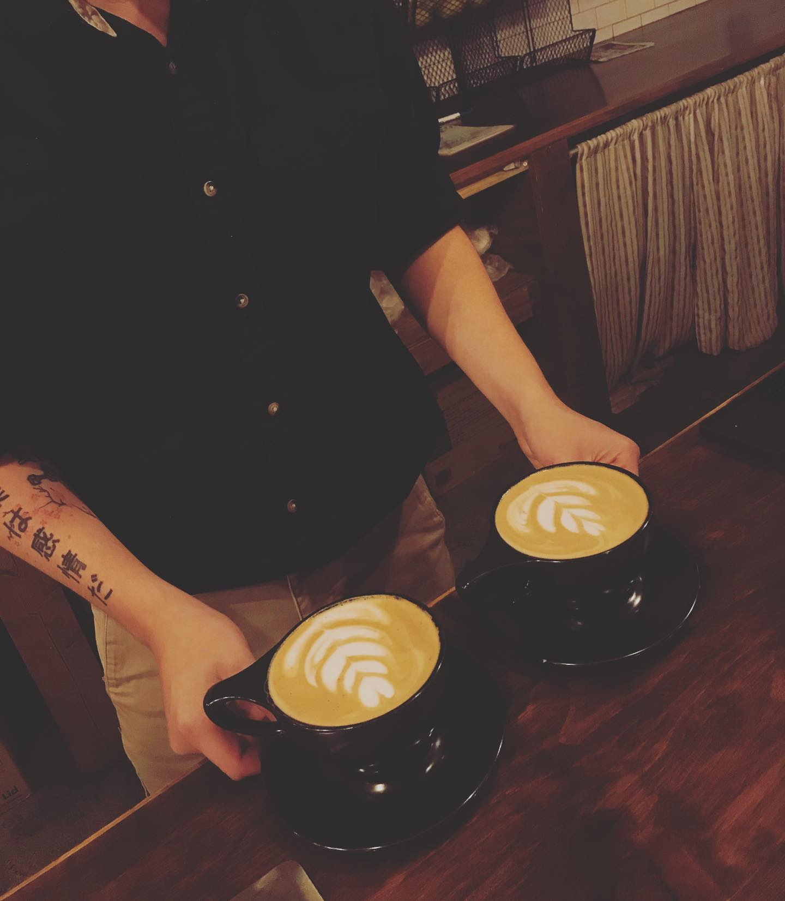
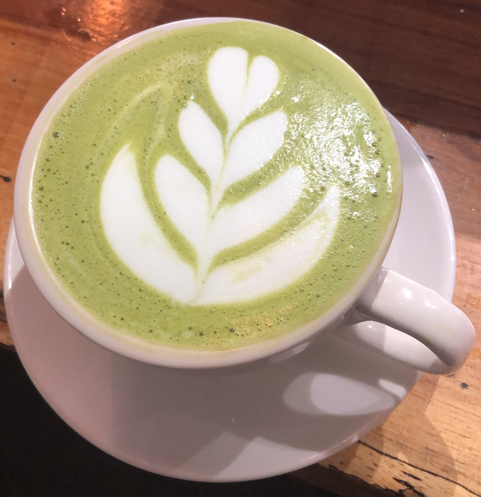

Barista
For a good chunk of my life I was a barista serving up smiles at many different coffee shops around San Antonio! Learned a lot about coffee and different ways to make it. Met a lot of amazing people and enjoyed my years as a barista!
 For a good chunk of my life I was a barista serving up smiles at many different coffee shops around San Antonio! Learned a lot about coffee and different ways to make it. Met a lot of amazing people and enjoyed my years as a barista!
 